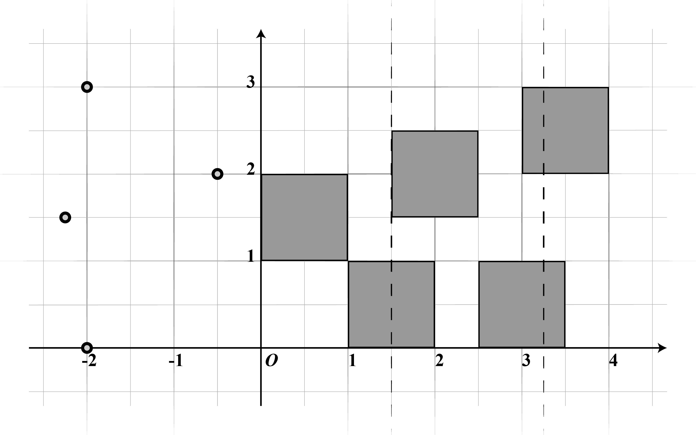
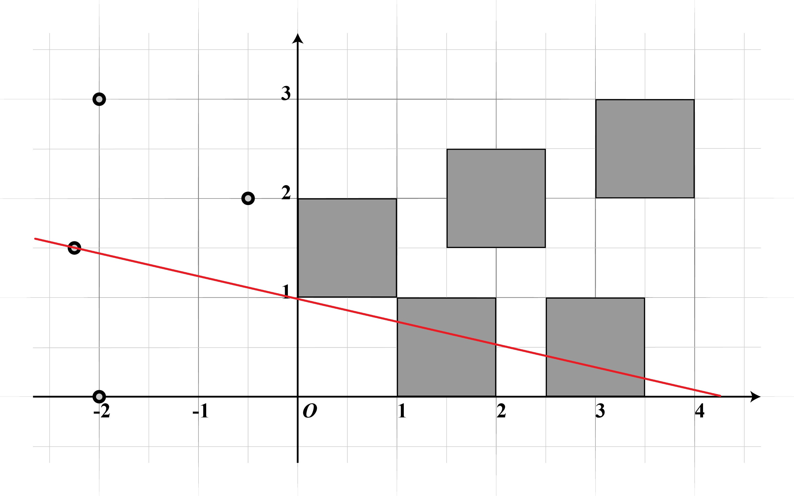

Riddle 98 Ultimate Justice
这里有四个小人, 还有五块饼干. 很明显, 小人会为了谁吃两块饼干, 谁吃一块饼干而争执不休. 因为, 不论谁吃两块饼干, 都是不公平的!
为此, 我们可以在 x= 3/2 和 x=13/4 处切两刀(如图所示), 这样, 五块饼干就可以平均分给众人了.
但是, 一口气切两刀太费时费力了, 我们需要更简单的方法。
Riddolver, 请设计一种切法. 使得在切过一刀之后, 局面会变得公平起来, 小人可以平分饼干.
切口的方程为 y=ax+b . 记 N0 为方程 a/2 x2-bx+1=0 的正根, 令 P(n0, l) 表示从 N0 小数点后第 n0 位开始，向后 (l-1) 位的字符集
如: 对于 N0=√2, P(1,3)=1.41421=414
加密的地点, 就在眼前, 可望而不可即.
办公楼 P(223,3)号房间抽屉里
所谓正义,
不过是胜者的自称.
Tips
-
Ctu(105) a(1) enoprs(315) for(90) afir(107).
-
778 46002 78883 21301299 39 719475 86 1074 -56513 -137 39 -15404273.
输入并检查答案
房间号为
Final Letter 就在办公楼 608 房间内的讲台里.
终于, 要接近尾声了. 你已经完成了必要的全部迷题, 准备要去终点与我们相会了.
之前在 民法典(Law) 一题中, 我们抛弃了公平, 以实用为首要最求. 在最后的最后, 在这一题, 我们又回归了正义, 将公平牢记于心. 公平与正义, 底线真的如此灵活吗?
在公平无法达成时, 我们究竟要尽可能让人满意, 还是消除产生不公平的漏洞呢?
此题难度有一些, 但只要避开两个思维盲区, 基本是可以轻松拿下的. 切割方法如下图所示
首先, 切掉一人. 然后将下方的两个矩形分成 2/3 2/3 1/3 1/3 四块, 正好可以分给三人. 直线的方程为 y = -2/9x + 1 . 因此二次方程的正根为:
x = 3/4 (√17 - 3)
最终可求得
P(233, 3) = 0.908...819608169... = 608